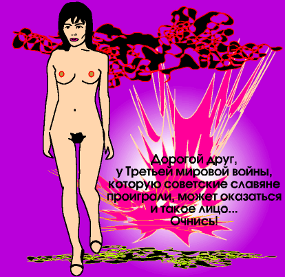

С этим полотном я несколько поспешил. Но все равно красиво и к месту. Третья мировая война, это вам не над Андрюши Ворхолой картинками языками цокать.

Включите просмотр. Будет еще. А та жывопысь, которая уже была ранее — на подходе. Это будет серия разоблачения Ворхолы.